一文掌握十个单细胞数据库
原文：https://mp.weixin.qq.com/s?__biz=MzAwMzIzOTk5OQ==&mid=2247507979&idx=1&sn=e94225b592733f2e22b4b09245027365&chksm=9b3cd95bac4b504df8dc25d9c5cfddf56d3b47e7cc6f33a7ef369bc916c60abb6b49277b79f7#rd 合集：单细胞教程全收录
写在前面

在实际的单细胞数据分析(细胞注释环节)中，我们需要依赖大量的文献/数据库来对结果进行校验，此时单细胞数据库能够快速帮助我们找到合适的参考数据集/信息。本文，我们整理了十个单细胞数据库，相信能帮助大家节省很多时间。更多单细胞教程可见：二十万+播放量的单细胞教程
数据库
1 CellMarker 2.0
1.1 简介
CellMarker 由哈尔滨医科大学李霞教授团队建设完成，于2018年首次发布。CellMarker 2.0是1.0的更新版本，提供了人和小鼠的不同组织中不同细胞类型的marker基因集合。
1.2 模块功能
该数据库包含六大模块：Home、Search、Browse、Cell Tools、Download、Help
(1)Home
Home模块由一张可链接人/小鼠不同组织不同细胞marker的图形化检索入口、快速搜索栏、数据统计信息栏以及下方的6种在线分析工具组成。研究人员可以根据自己的研究目标进行直接点击链接。
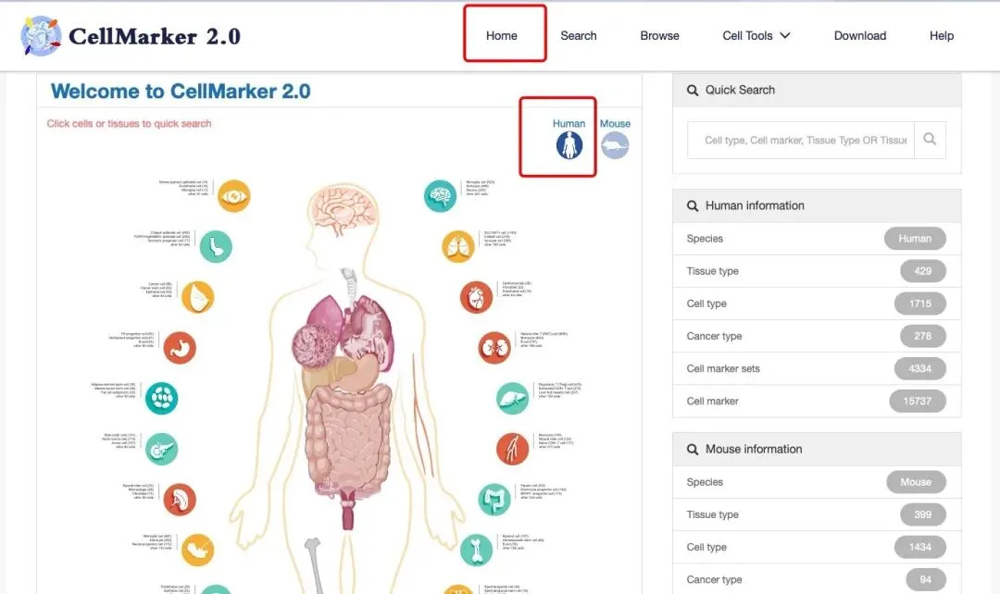
(2)Search
Search模块共包含3种搜索模式，分别是按细胞搜索、按marker搜索和快速搜索；其中按细胞检索的是选择项，其他的则是填空项，信息确认后点击submit提交即可得到结果。
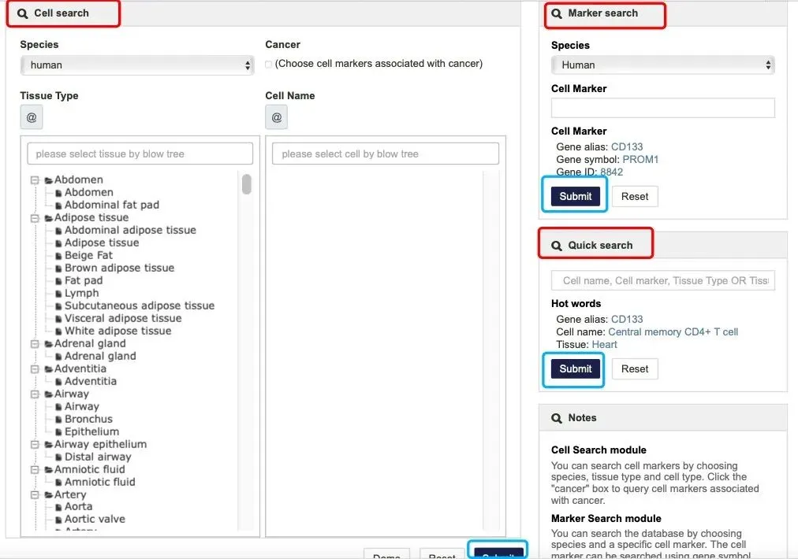
例如：我们检索mouse-gut- Tcel，提交后再下方的Statistical graph of cell markers模块中点击csv即可下载marker的具体信息(csv格式的表格)。
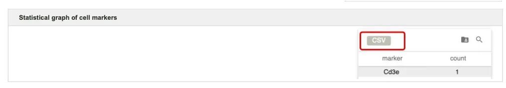
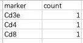
(3)Browse
Browse模块是用来直接查看该数据库存储了哪些数据资源。首先刚进入该页面得到的是人或鼠的按组织和cell marker数目的多少从高到低的一览图(矢量图，可放大缩小)。
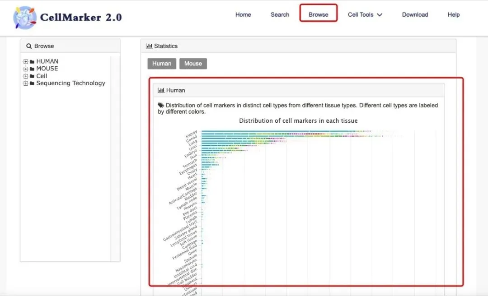
也可以点击左侧栏查看具体的组织和细胞marker，结果会在右边进行呈现。
(4)Cell Tools
Cell Tools模块包括6种单细胞在线分析工具：
a.细胞注释(Cell annotation)： 该数据库提供了一个广泛的细胞标记基因列表，这些基因与特定的细胞类型或状态相关联。使用这些标记基因，可以通过对单细胞转录组数据进行分析和比较，将每个单细胞与已知的细胞类型进行对比，并确定其最有可能的细胞注释。
b.细胞聚类(Cell clustering)： 将单个细胞根据其转录组数据的相似性进行分组的过程。这个过程旨在识别和定义细胞群集，每个群集代表具有相似基因表达模式的细胞群。
c.细胞恶性病变(Cell malignancy)： 允许用户获取不同数据集中恶性细胞的拷贝数变异情况。该数据库提供了自定义参数的功能，用户可以设置不同的图表类型来获取不同单细胞数据集中细胞的拷贝数变异情况。
d.细胞分化(Cell differentiation)： 提供了一系列灵活的网络工具，用于分析和可视化单细胞测序数据。包括自定义参数 ：CellMarker 2.0允许用户自定义参数来分析细胞的伪时间轨迹。用户可以设置不同的坐标（包括tSNE和UMAP）、分辨率或根簇，并输入基因符号进行分析。分析细胞伪时间轨迹 ：用户可以分析细胞的伪时间轨迹。这有助于了解细胞在发育和分化过程中的变化和演变。可视化工具 ：提供了可视化工具，可以将细胞分化的结果以图表形式展示出来。
e.细胞特征(Cell feature)： 用于描述细胞类型和状态的特征或标记。这些特征可以是细胞表面分子、细胞内信号通路、基因表达模式等。
f.细胞互作(Cell communication)： 用于细胞间通讯分析，可自定义参数和互作可视化。
(5)Download
Download模块提供了下载功能(以XLSX格式)，用户可以从该数据库下载相关数据。可下载的文件包括：
-
各种人类和小鼠组织中不同细胞类型的所有细胞marker
-
人类细胞marker
-
小鼠细胞marker
-
所有测序技术研究中的细胞marker
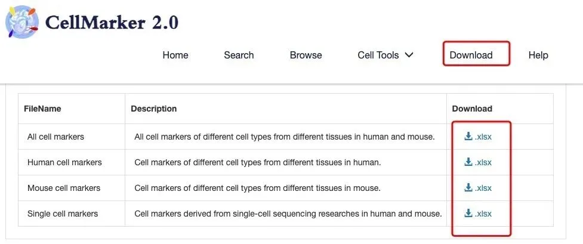
(6)Help Help中实际上就是该数据库的用法介绍，也有具体例子的展示。新手可以参考。
1.3 访问链接
http://bio-bigdata.hrbmu.edu.cn/CellMarker/
1.4 数据库citation
Hu C, Li T, Xu Y, et al. CellMarker 2.0: an updated database of manually curated cell markers in human/mouse and web tools based on scRNA-seq data. Nucleic Acids Res. 2023;51(D1):D870-D876. doi:10.1093/nar/gkac947
2 Cell BLAST
2.1 简介
Cell BLAST是一个基于深度对抗学习模型的单细胞转录组数据检索和注释工具，由北京大学高歌研究员实验室开发,它还配备了高质量注释的单细胞转录组参考数据库ACA Reference Panels，为细胞注释和跨数据集研究提供了新的工具和资源。Cell BLAST类似于生物序列研究中的BLAST算法，可以在多个参考数据集中检索与用户提供的查询细胞最相似的细胞，并利用这些相似细胞在数据库中的注释信息，对查询细胞的注释信息进行推断。此外，Cell BLAST还可以用于跨物种注释连续细胞状态的任务，与其他现有工具相比，Cell BLAST在跨物种预测的细胞分化命运方面具有更高的相关性。
2.2 模块功能
该数据库由4个模块组成：home, Download, FAQs, Contact。
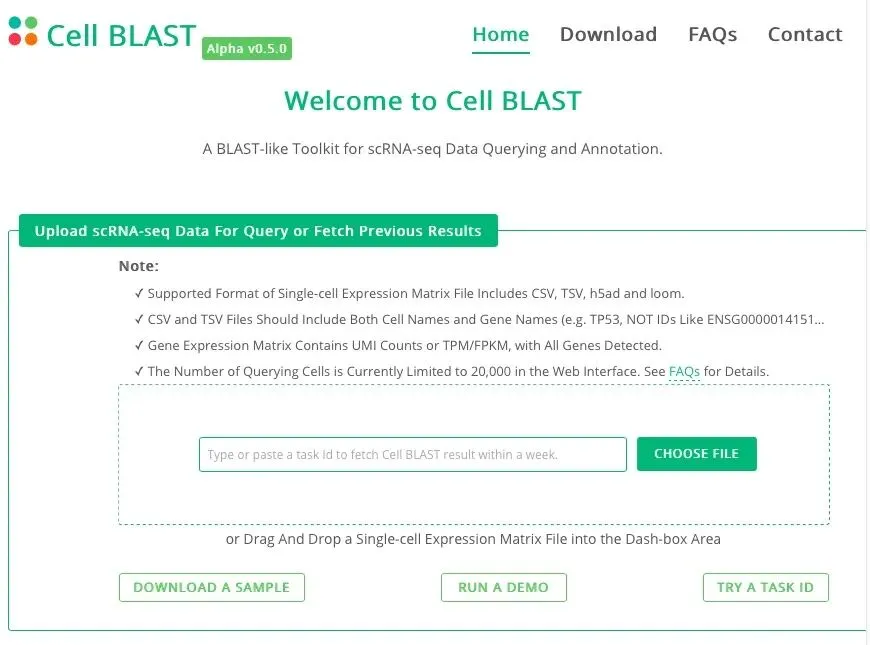
(1)Home
研究者可以在该界面上传自己的数据，数据格式和要求可以参考Note,例如文件格式为CSV、TSV、h5ad和loom；CSV和TSV格式应该包括细胞名和基因名等，具体细节或者不清楚的可以参考FAQs(Frequently Asked Questions)模块。
在粘贴板下方有3个选项，分别是样本下载，运行展示和尝试任务ID，方便研究员试操作。我们点击RUN A DEMO,进行演示。
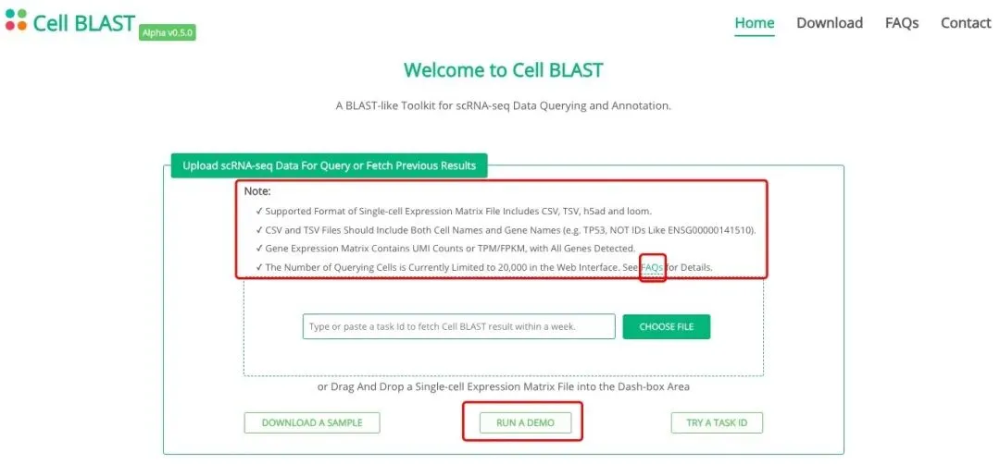
出现用于运行的样本信息，点击confirm确认：
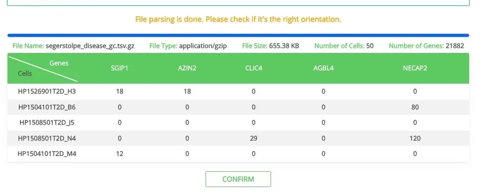
选择参考模版，并填写邮箱：
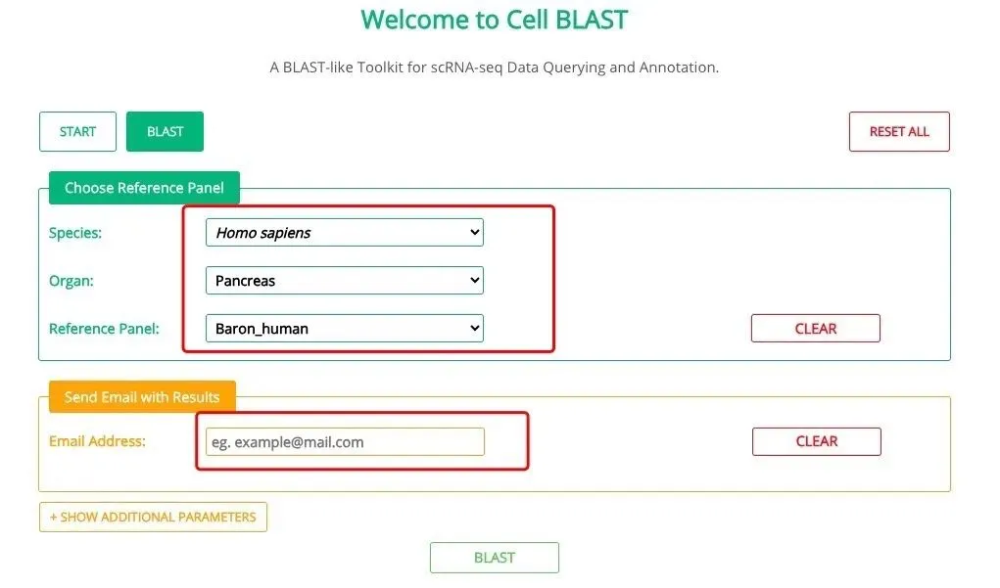
得到Hits table:
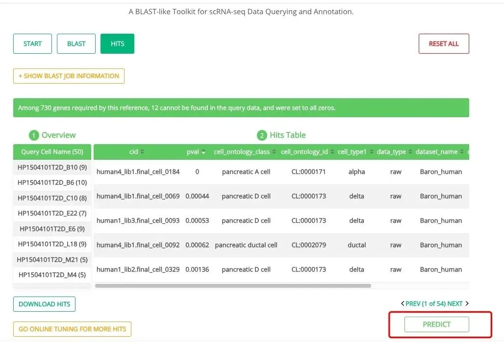
设置参数后进行预测：
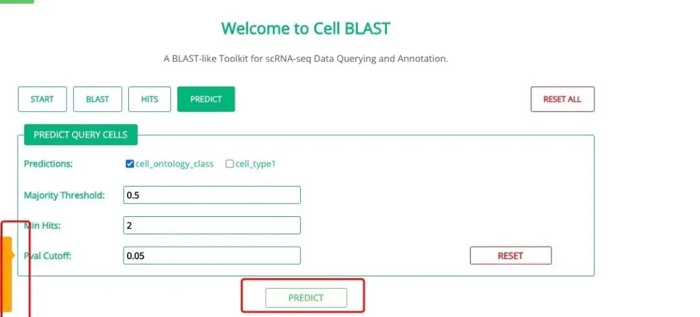
最后可以将预测的结果进行下载或者可视化展示：
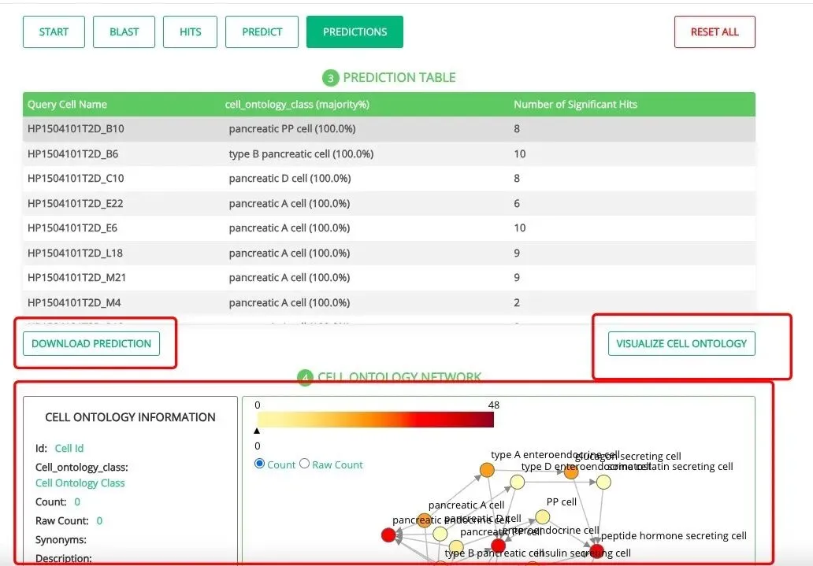
(2)FAQs
在介绍Download前，先看一下FAQs,在该模块中介绍了如何使用数据库，并包括了很多其他常见问题的答案。例如，是否支持跨物种的分析，答案是支持！另外，有的研究者的数据涉及机密或者单纯不想上传自己的数据，是否支持线下分析，答案是支持！并给出了具体的解决方案。
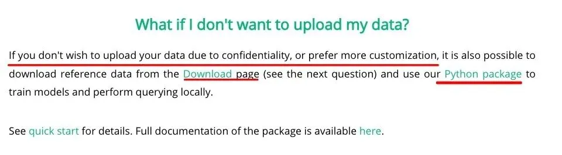
研究者可以从Download中下载数据库，并利用python包进行线下分析。数据库和包也为大家提供了，点击蓝色的链接字体即可跳出具体信息。
(3)Download
Download模块主要内容是ACA参考面板(数据库)，该面板是一组经精心筛选和鉴定的细胞类型，用作scRNA-seq数据集中细胞类型识别的参考。点击第一列数据名称即可下载到本地。研究这可根据实验需要进行下载后结合python包实线线下分析。
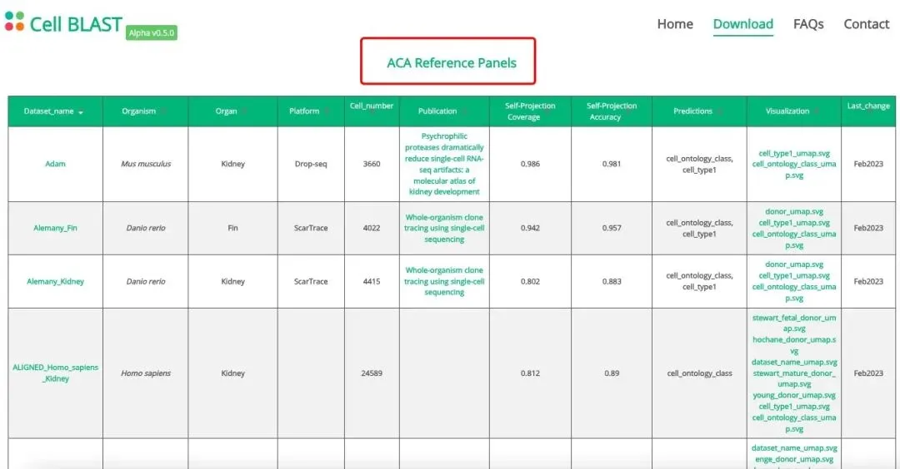
(4)Contact
有问题或发现错误可以联系该数据库的维护者，网页提供了邮箱。
2.3 访问链接
https://cblast.gao-lab.org
该数据库持续更新，目前更新到2023，可以从Download中最后一列的Last_change进行查看更新时间。
2.4 数据库citation
Cao ZJ, Wei L, Lu S, Yang DC, Gao G. Searching large-scale scRNA-seq databases via unbiased cell embedding with Cell BLAST. Nat Commun. 2020;11(1):3458. Published 2020 Jul 10. doi:10.1038/s41467-020-17281-7
3 人类细胞图谱（Human cell atlas,HCA）计划
3.1 简介
HCA 是一个国际科学家小组的共同努力，旨在创建人体所有细胞的综合参考图。HCA数据门户是与 Chan Zuckerberg Initiative 合作建立的，并由EMBL-EBI、布罗德研究所和加州大学圣克鲁斯分校的科学家和技术人员继续开发。
3.2 模块功能
首先主页上直接出现2个模块，分别是探索数据(Explore data)和贡献数据(Contribute data)，下面是细胞、贡献者、项目及实验室的数量统计。再下方是根据器官类别分类的数据集的图形链接。
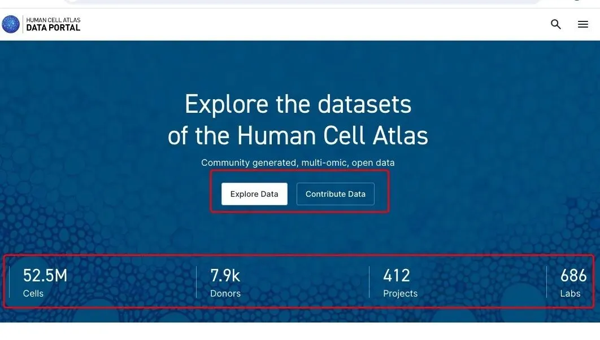
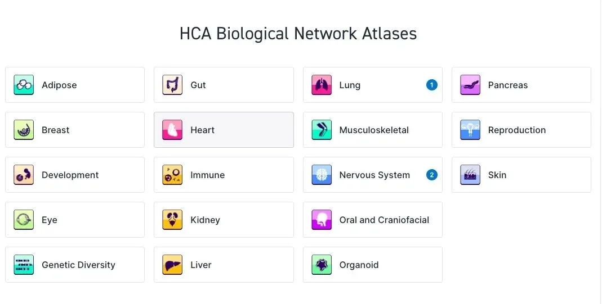
点击右侧的栏目表，显示7个模块，分别是：Datasets、HCA BioNetworks、Guides、Metadata、Contribute、APIs和Updates。
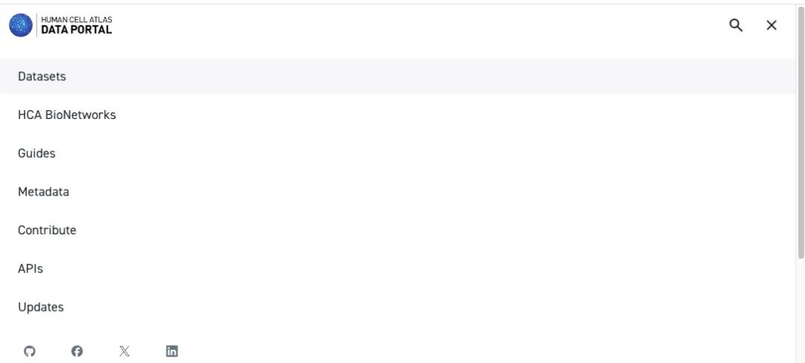
(1)Datasets
该模块和从主页的Explore data点进去是一样的，也是该数据库的主要模块。Explore data数据有3种分类，分别是项目(Projects)、样本(Samples)、文件(Files)。项目数据中列出了具体的物种、实验方法、解剖结构、疾病或捐赠者(正常/疾病)和细胞计数估值。也可以从右上方的筛选进行直接筛选。
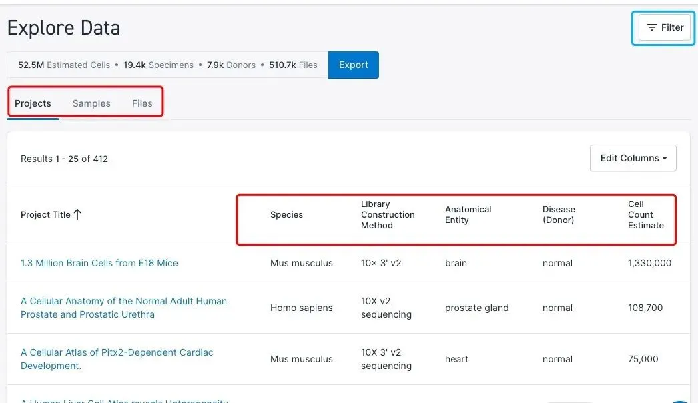
样本数据比项目文件多了Sample ID和Sample Type，其中Sample Type中显示有的样本为标本，而有的则是类器官。
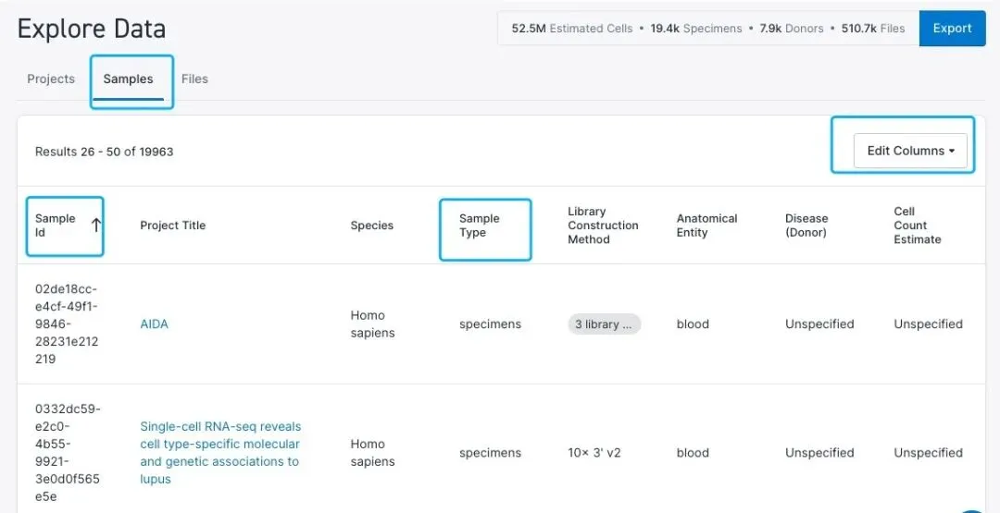
文件数据则是根据文件进行整理：
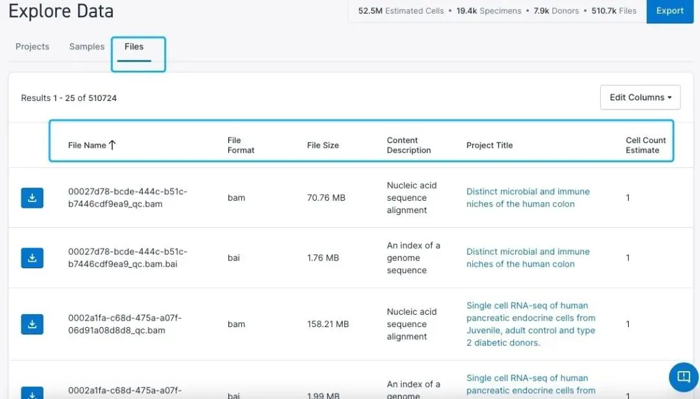
(2)HCA BioNetworks
该模块就是主页下方是根据器官类别分类的数据集的图形链接。
(3)Guides
指南，包含了关于该数据库的详细信息和使用指导。
(4)Metadata
元数据，包括元数据类型和模式模块信息。
(5)Contribute
这部分是贡献数据，与主页点击Contribute data的效果是一样的，研究者可以提交数据。包括数据适用性、提交流程以及数据处理和结果。
关于数据适用性：HCA通过5个标准来评估构建Atals数据集的适用性，其中从红色到绿色表示数据的可用性越高。
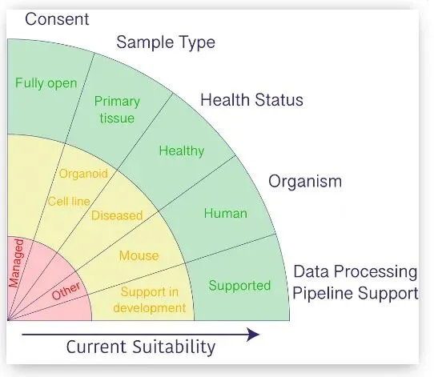
(6)APIs
指应用程序接口（API）。这些API允许不同的系统之间共享数据，并提供了一个简单易用的接口，使得授权的应用程序可以正确地发送和接收数据。通过API，第三方可以与电子健康记录（EHR）交换数据。通过APIs可以实现与数据库的数据交互和集成，为应用程序提供便利和灵活性。
(7)Updates
该数据库的更新记录。
3.3 访问链接
https://data.humancellatlas.org/
3.4 数据库citation
Regev A, Teichmann SA, Lander ES, et al. The Human Cell Atlas. Elife. 2017;6:e27041. Published 2017 Dec 5. doi:10.7554/eLife.27041
4 scTPA
4.1 简介
scTPA 是由温州医科大学苏建忠教授课题组开发的一种基于人类和小鼠生物途径激活的单细胞转录组分析和注释的网络工具。收集了大量具有不同功能和分类学分类的生物途径，这有助于识别细胞类型注释和解释的关键途径特征。四种不同途径激活评估方法的可执行代码经过优化，运行时间减少了4-56倍。提供单细胞通路激活谱的分析和可视化，例如细胞聚类和注释、标记通路及其相关基因的识别，这使得从通路导向的角度更好地理解细胞类型和状态。
4.2 模块功能
该数据库包含4个模块：Home、Retrieve results、Contact和Help。
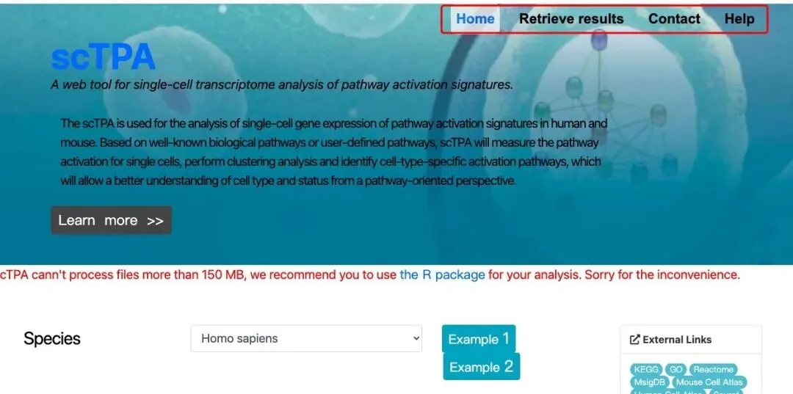
(1)Home
从Home模版中上传待分析的数据，其中除了细胞类型标签是可选项，其他是必填项。维护者为了研究者更轻易上手，提供了例1和例2数据进行试分析。另外，home模块中提供了一些常用的外部链接。
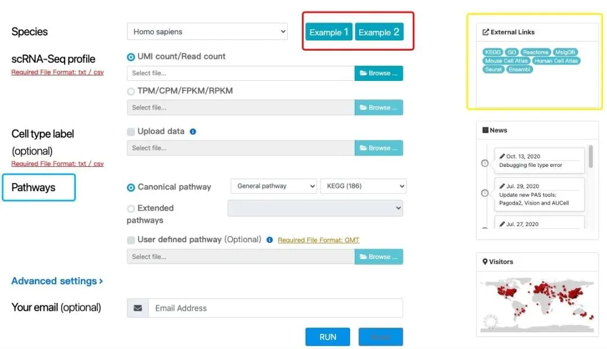
假设使用例1进行试分析，点击Example 1和Run，页面则跳转为结果页面，注意这里会生成一个ID，在真实分析时需要记住这个ID(20231221133741894)，可以根据ID找到你的分析结果。与此同时原来Retrieve results模块变成了Job run。
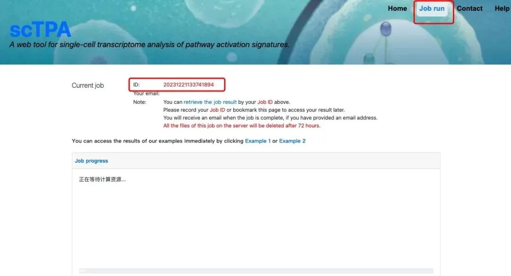
这里为了演示分析结果，我们点击Example 1，就能得到ID为Example 1的分析可视化结果，可以将这些结果进行点击下载。
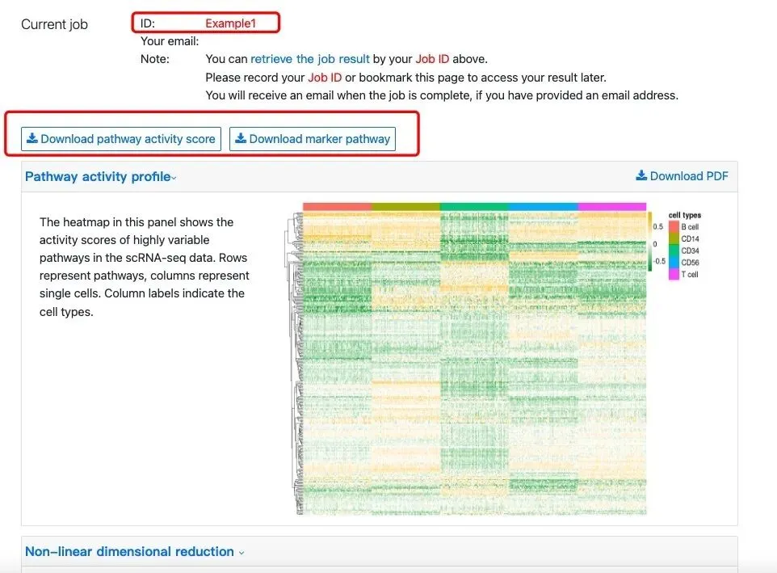
(2)Retrieve results
当我们直接进入该数据库，并在home模块不做任何处理，仅仅想查看之前的分析结果，则可以进入Retrieve results模块，选择根据Job ID或Email进行检索。
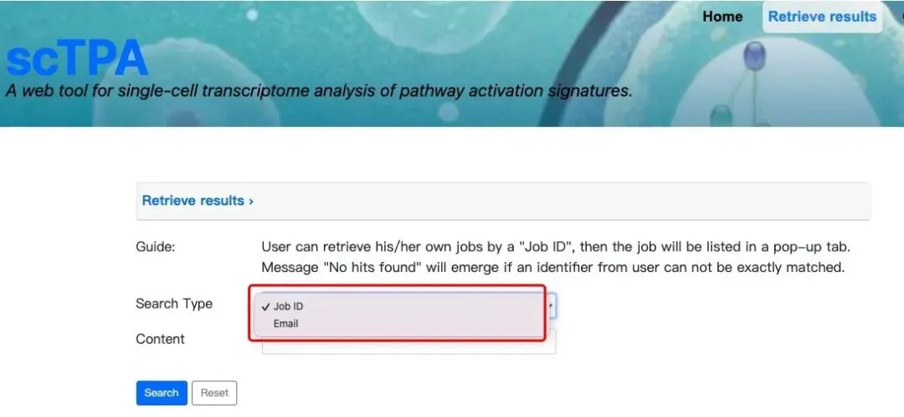
我们以前面的ID(20231221133741894)为例，输入进去。再点击Result page，则出现我们前面的分析结果。
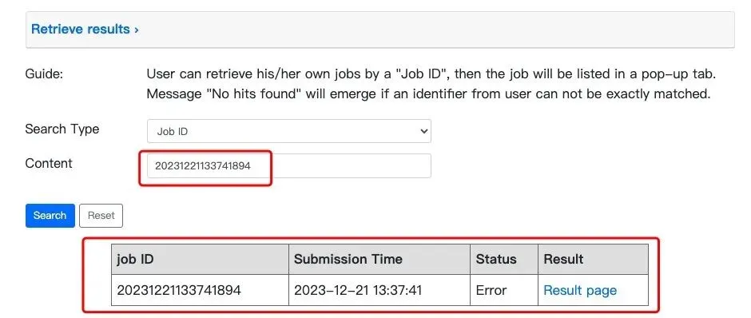
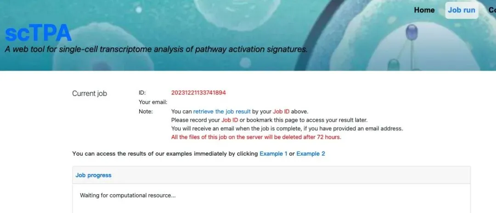
(3)Contact
该数据库维护团队的联系方式。
(4)Help
该模块包括了对该数据库的介绍、如何快速上手进行分析、结果导出以及其他信息。信息列表可以参考左侧列，内容还是比较详细的。新手可以仔细阅读。
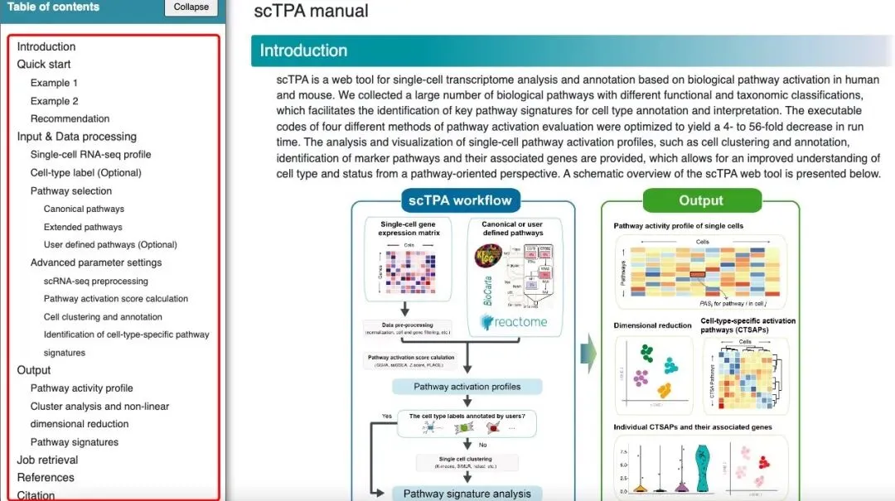
4.3 访问链接
http://sctpa.bio-data.cn/sctpa/
4.4 数据库citation
Zhang Y, Zhang Y, Hu J, et al. scTPA: a web tool for single-cell transcriptome analysis of pathway activation signatures. Bioinformatics. 2020;36(14):4217-4219. doi:10.1093/bioinformatics/btaa532
Zhang Y, Ma Y, Huang Y, et al. Benchmarking algorithms for pathway activity transformation of single-cell RNA-seq data. Comput Struct Biotechnol J. 2020;18:2953-2961. Published 2020 Oct 15. doi:10.1016/j.csbj.2020.10.007
5 SC2disease
5.1 简介
SC2disease由西北工业大学计算机学院的彭佳杰教授课题组开发建立。是一个人工整理的数据库，旨在为不同疾病的各种细胞类型提供全面而准确的基因表达概况资源。随着单细胞RNA测序（scRNA-seq）技术的发展，通过在细胞水平上分析跨细胞类型的转录组，发现不同组织对不同疾病的细胞异质性变得可行。特别是，比较不同细胞类型之间的基因表达谱，并识别各种疾病中的细胞类型特异性基因，为解决生物和医学问题提供了新的可能性。然而，缺乏细胞层面人类疾病基因表达概况的系统性、分层性和庞大数据库。因此，数据库创建者们审查了2020年3月之前的文献，并开发了SC2disease数据库，以汇总不同疾病、组织和细胞类型的所有数据该数据库记录了946481个条目，对应341种细胞类型、29种组织和25种疾病。SC2disease数据库中的每个条目都包含不同细胞类型、组织和疾病相关健康状况之间差异表达基因的比较。此外，通过统一的管道重新分析了基因表达矩阵，以提高不同研究之间的可比性。对于每种疾病，我们还将细胞类型特异性基因与全基因组关联研究（GWAS）中确定的铅单核苷酸多态性（SNPs）的相应基因进行比较，以暗示性状的细胞类型特异性。
5.2 模块功能
该数据库共包括6大模块：Home,Browse,Search,Analysis,Download,Submit
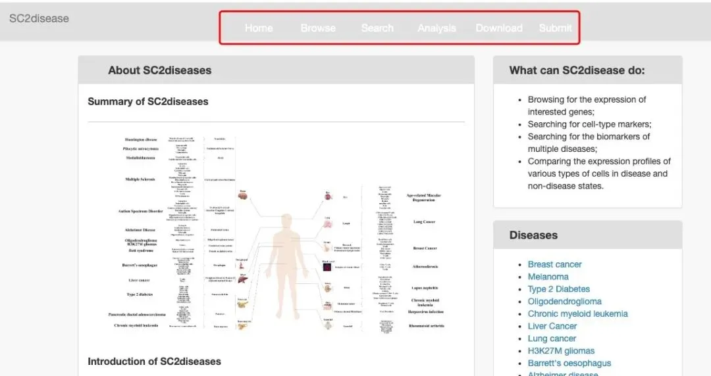
(1)Home
Home模块的左侧部分是一个图形化数据展示，右侧的disease部分是按疾病分类的数据链接。另外，home中也提供了常见的外部参考数据库的链接。
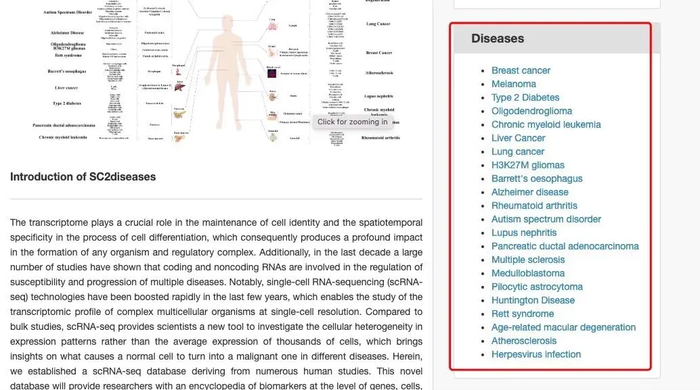
(2)Browse该模块提供了按疾病类型和按细胞类型进行归纳整理的差异基因的数据。点击下载图标即可下载csv格式的文件到本地。另外，在Gene栏，点击具体的基因名称可以链接到NCBI-Gene-基因a。
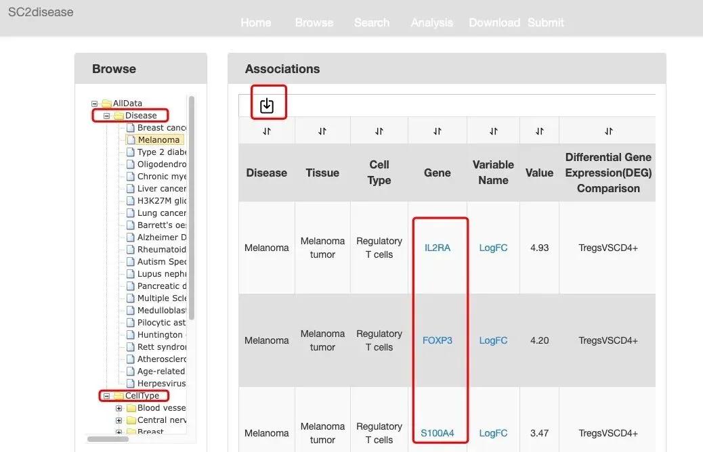
(3)Search
在该模块可以直接输入疾病名、基因名、细胞类型等信息进行精准搜索查询。
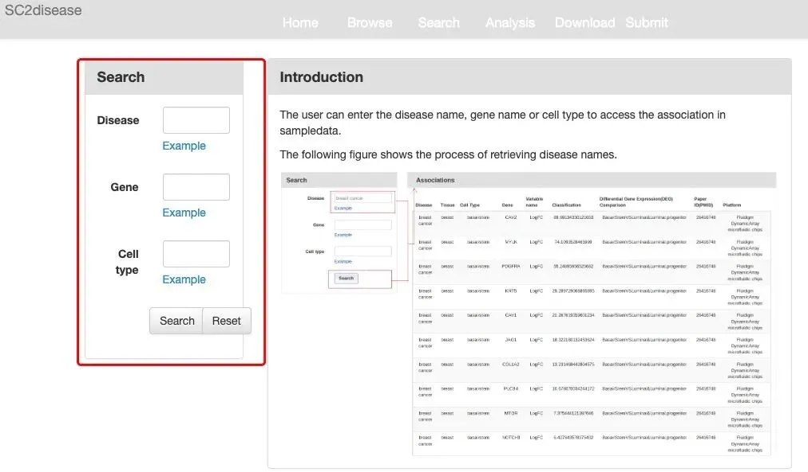
(4)Analysis
首先在左侧输入疾病名或者基因名，下方的Single cell data VS GWAS data中的Display用于显示数据表。Visualize用于数据可视化。
例如，我们以CD4基因为例，点击Search后右边显示出CD4基因在不同疾病不同组织和细胞中的表达变化。
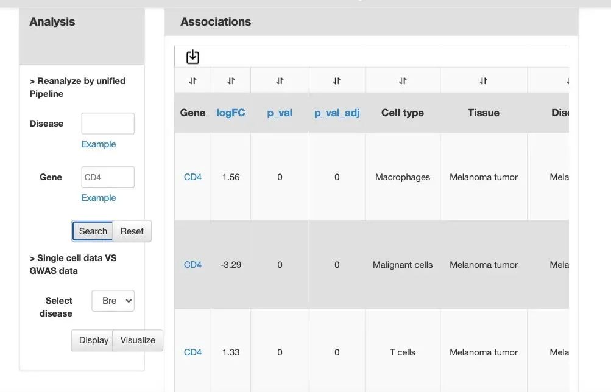
另外，我们在Single cell data VS GWAS data中选择Type 2 diabetes,点击Visualize得到可视化结果。
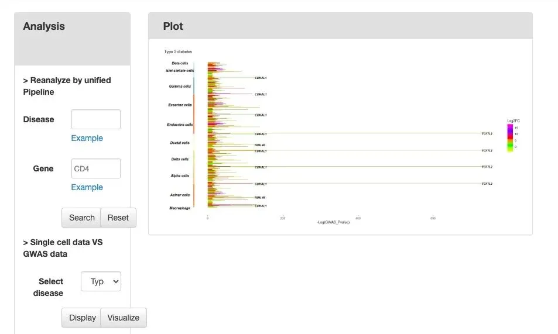
(5)Download
Download模块提供了不同数据的下载。
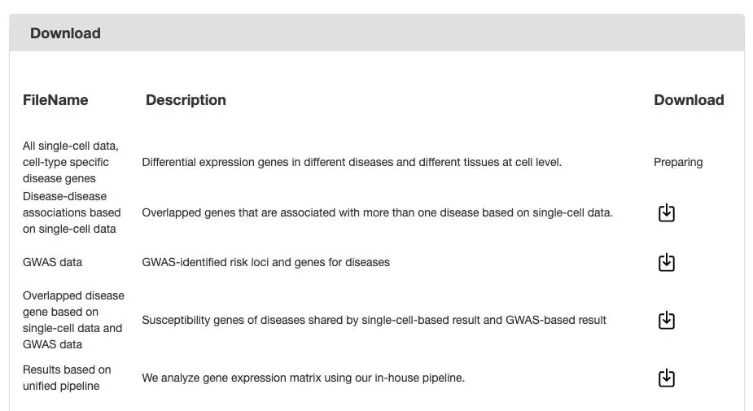
(6)Submit
欢迎研究者上传自己的研究数据。
5.3 访问链接
http://www.easybioai.com/sc2disease/
5.4 数据库citation
Zhao T, Lyu S, Lu G, et al. SC2disease: a manually curated database of single-cell transcriptome for human diseases. Nucleic Acids Res. 2021;49(D1):D1413-D1419. doi:10.1093/nar/gkaa838
6 CancerSEA
6.1 简介
CancerSEA 是由哈尔滨医科大学生物信息科学与技术学院研发，是第一个致力于在单细胞水平上全面解析癌细胞不同功能状态的专用数据库。它描绘了癌症单细胞功能状态图谱，涉及41,900个14种功能状态（包括干细胞、侵袭、转移、增殖、EMT、血管生成、凋亡、细胞周期、分化、DNA损伤、DNA修复、缺氧、炎症和静止）来自25种癌症类型的癌症单细胞。CancerSEA允许用户查询感兴趣的基因或基因列表与不同癌症中的哪些功能状态相关。此外，它还提供了在所有癌症类型、特定癌症类型和个体癌症单细胞数据集中以单细胞分辨率经常与功能状态相关的PCG/lncRNA库。最后，CancerSEA提供了一个用户友好的界面，用于全面搜索、浏览、可视化和下载功能状态活动图谱、PCG/lncRNA 表达图谱和14个功能状态特征。
6.2 模块功能
主要包括6大模块：Home，Search, Browse, Statistic, Download, Help
(1)Home
Home模块中的14种花型图案对应14种癌症相关功能状态(血管生成、细胞凋亡、细胞周期、细胞分化、DNA损伤、DNA修复、EMT、细胞缺氧、炎症发生、癌细胞侵袭、转移、增殖、细胞静息、干细胞特性)，也和右边的Functional states对应。可以通过这里直接链接到具体的某一功能状态的癌症以及涉及的具体细胞数据。
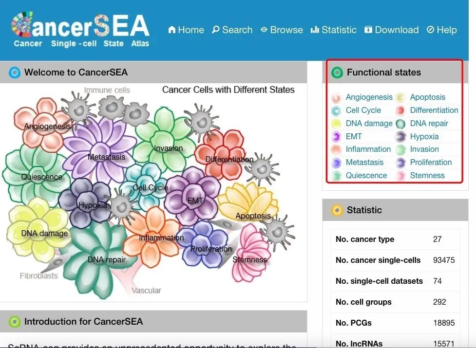
(2)Search
Search模块提供了3种检索方式，研究者可以根据自己的需求选择检索方式，得到相应的结果。
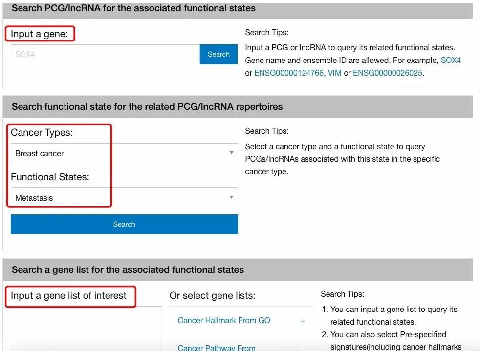
(3)Browse
在该模块用户可以浏览所有癌细胞的功能状态图谱，并查看详细的数据集 信息。例如点击黑色素瘤，下面显示出5个数据集，右边是对应的所有数据集的功能状态热图。
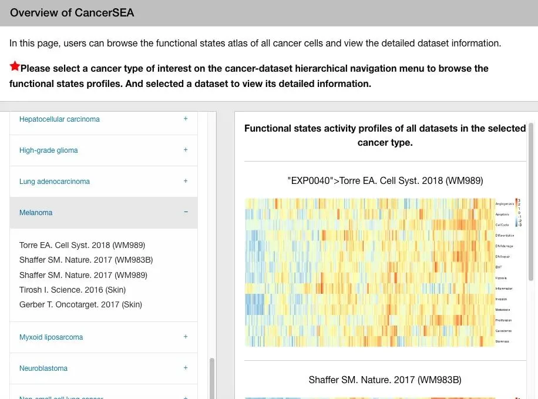
(4)Statistic
该模块展示了四幅统计图，分别是所有实验的癌症类型比例、QC前后每种癌症的单细胞数量、每种癌症中细胞群的比例、QC后每种癌症中单细胞的比例。
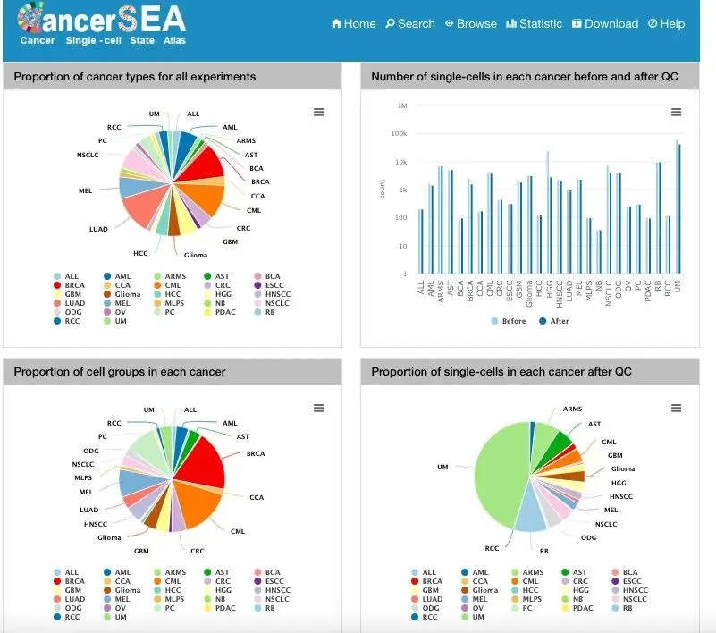
(5)Download
该模块提供数据下载，分别是按肿瘤类型整理的数据(上)和按功能状态整理的数据(下)。研究者可以根据需求自行下载。
(6)Help
该模块是对该数据库的介绍和用法的详细介绍。
6.3 访问链接
http://biocc.hrbmu.edu.cn/CancerSEA/
6.4 数据库citation
Yuan H, Yan M, Zhang G, et al. CancerSEA: a cancer single-cell state atlas. Nucleic Acids Res. 2019;47(D1):D900-D908. doi:10.1093/nar/gky939
7 DISCO
7.1 简介
DISO由陈金淼博士团队创建和维护，整合了来自351个项目的4450个样本的超过1800万个细胞，涵盖107种组织/细胞系/类器官、158种疾病和20个平台。DISCO 上托管的所有数据都是使用标准化管道从原始 fastq 文件进行处理的。利用大量公开的细胞类型注释，她们开发了CELLiD，并应用它以自动、标准化的方式注释细胞类型。为了整合单细胞数据并创建一致的参考图，她们开发了FastIntegrate，它可以很好地适应大量细胞和批次，并返回批次校正的基因表达值以供下游分析。DISCO还配备了在线工具，使用户能够执行自定义数据集成，并上传自己的数据以进行细胞类型注释和映射到可用图谱上。
7.2 模块功能
包含了7大模块：Repository, Atlas, DEG, Cell Type, Tools, Download, Vignette
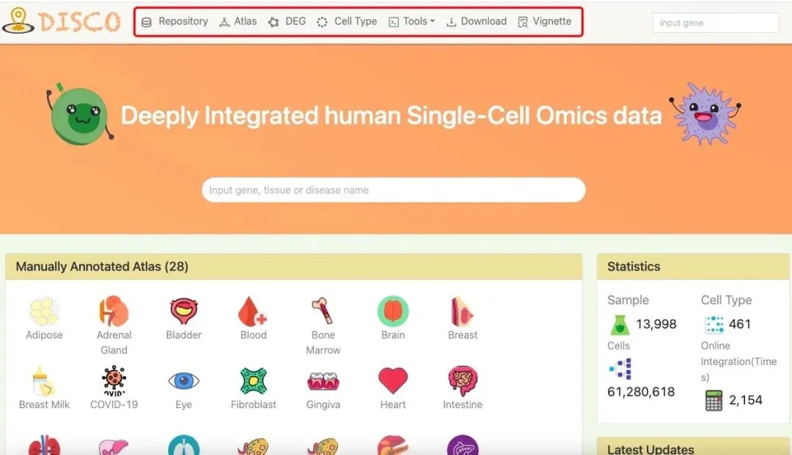
主页上的28种组织图标可以直接链接到对应组织的单细胞数据。另外，在下方展示了不同在线工具的使用步骤以及数据库结构。
(1)Repository
该模块进去后可以输入具体的搜索条件进行筛选，得到结果后可以导出数据。数据第一栏是该数据的具体信息。
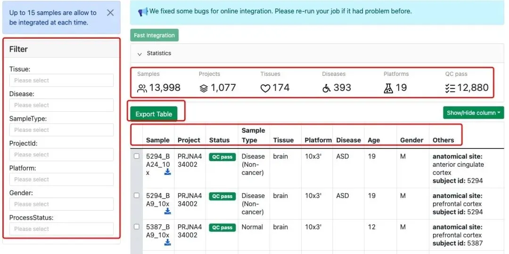
(2)Atlas
该模块是数据的汇总统计。
(3)DEG
该模块是差异表达基因（Differentially Expressed Genes）的数据，可以输入某一基因名后，再选择两种细胞进行比较该基因在两种细胞中的表达差异。
例如，想看CD4在Naive CD4和Naive CD8细胞中的表达差异。
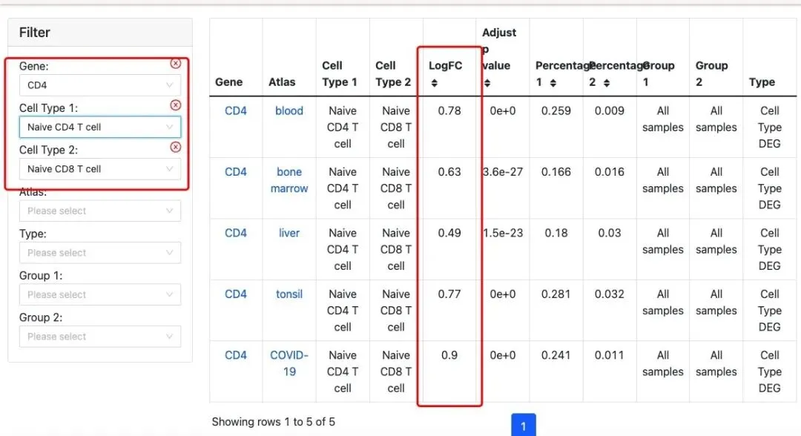
(4)Cell Type
该模块由2部分组成，分别是参考细胞类型和细胞类型树。
在参考细胞类型模版中可以根据研究需求输入具体的细胞类型，也可以直接导出表格，得到一个csv文件，包含所有类型细胞的数据。
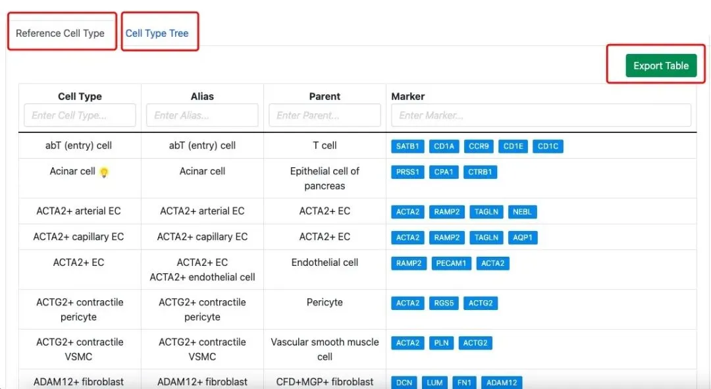
细胞类型树则是将细胞类型以树状图展示出来：
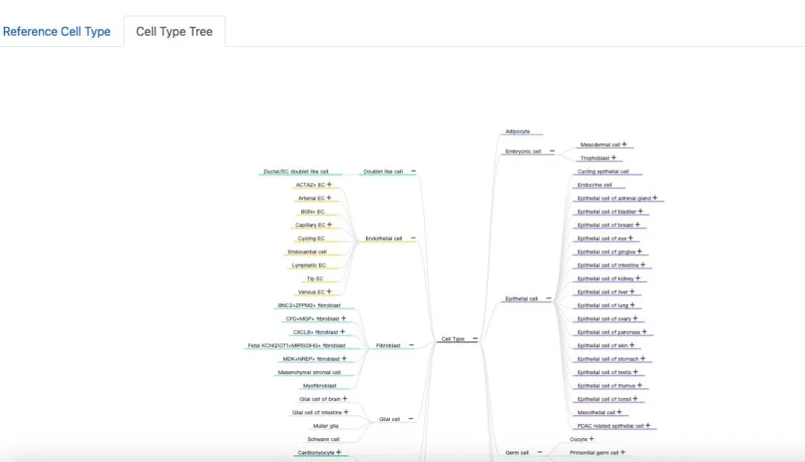
(5)Tools 该模块由三个在线分析工具组成：分别是细胞注释(预测)、数据转化和基因富集。
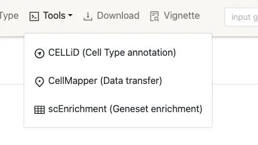
a.CELLiD工具 ：CELLiD工具用于细胞类型预测。研究者可以输入某个亚群中各个基因及其表达值列表，然后点击提交，即可得到预测结果。这个工具可以帮助用户快速进行细胞类型的预测，例如在肺纤维化组织中的mesothelial cell或膀胱组织中的macrophage。
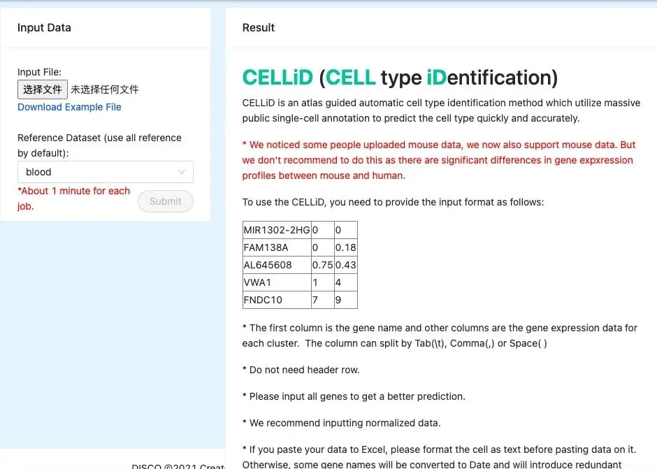
b.CellMapper工具 ：CellMapper工具允许研究者上传自己的单细胞测序数据进行探索分析。研究者可以上传数据，然后点击提交，即可得到分析结果。这个工具与其他功能类似，可以进行图谱分析、细胞注释和可视化等操作。
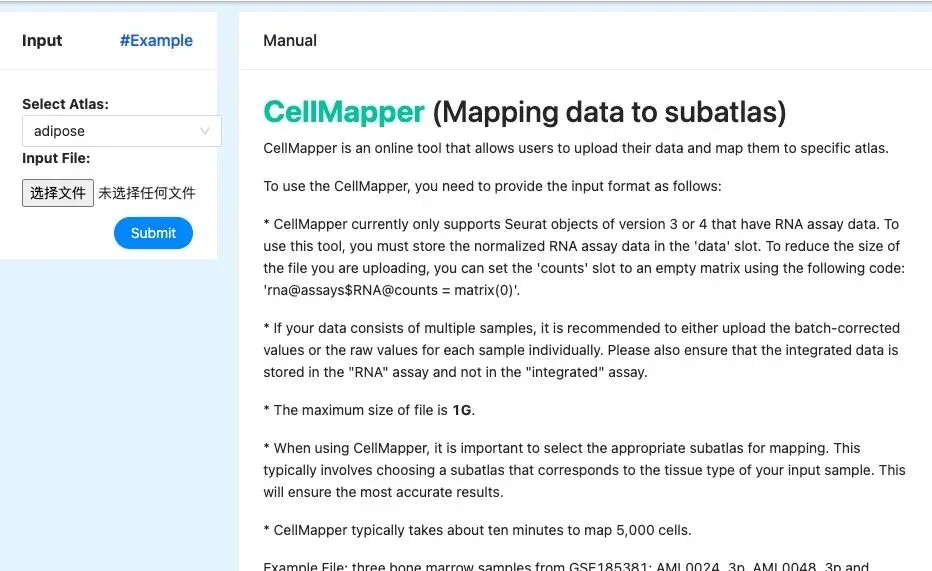
c.scEnrichment :用于进行单细胞数据的富集分析。使用scEnrichment工具，研究者可以输入感兴趣的基因集或基因列表，然后选择参考数据库或基因集，例如GO（Gene Ontology）注释、KEGG（Kyoto Encyclopedia of Genes and Genomes）通路、Reactome等。工具将根据用户提供的基因集和参考数据库，计算富集分析的结果，并生成富集分析图表和统计数据。
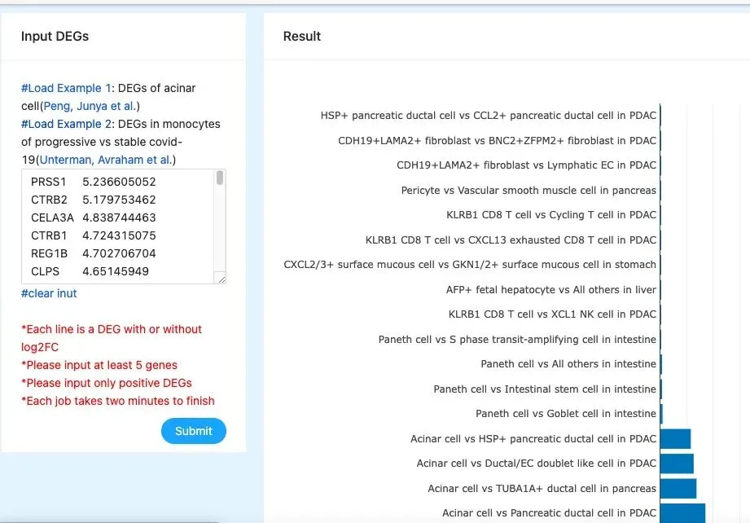
这三个在线工具数据库中都提供了例子数据可以进行演示学习。
(6)Download
数据下载模块，值得注意的是根据IP地址可以选择不同的来源。
(7)Vignette
该数据库的介绍和使用方法。
7.3 访问链接
https://www.immunesinglecell.org/
7.4 数据库citation
Li M, Zhang X, Ang KS, et al. DISCO: a database of Deeply Integrated human Single-Cell Omics data. Nucleic Acids Res. 2022;50(D1):D596-D602. doi:10.1093/nar/gkab1020
最后，这个数据库的美术和排版都很棒很有意思！
8 PanglaoDB
8.1 简介
是一个包含小鼠和人类单细胞 RNA 测序实验的数据库，由美国和瑞典的研究人员开发。
8.2 模块功能
共包含7个模块：Home,Search,Datasets,Tools,Papers,FAQ/Help,About，其中前4个模块比较有用。
(1)Home
在Home主页主要包括使用示例、数据库引用、数据库统计、当日数据集和网站更新消息。从更新消息中看出来最后更新时间2020-5-21。
(2)Search
Search就是用于检索基因名称，看其在不同细胞中的表达，物种可以选择人/鼠/人和鼠，另外，下面有两个选项：是否包含肿瘤样本和细胞系，是否包含未成年或非初始样本(胚胎，胎儿，产后发育，细胞系)。
例如，我们搜索CD4,结果如下:
(3)Datasets
a.Datasets_sample :该模块包含了该数据库的所有样本数据，可以在红色框中进行筛选，对感兴趣的数据点击view进行查看：
例如我们随便选择一个数据集进行查看，左边是关于该数据集的文字信息，右边是图片可视化展示，有4种模式，下面两种模式是交互式的。
选择其中一种交互式的点击进去，可以输入想查询的基因名称，例如CD4，发现该alpha cell上没有CD4的表达。
b.Datasets_cell type markers :在筛选框中根据组织类别-细胞名称进行筛选，我们依然以alpha cell为例，则列出该细胞的所有基因的信息，如有错误可以点击flag进行报错。
c.Datasets_Ubiquitousness index :这部分可以查看某一基因是否在所有类型细胞中普遍表达，有助于判断其是否是管家基因。通过UI的数值(0-1)体现，0表示在任意细胞都不表达，1表示在任意细胞都表达。
d.Datasets_Bulk data download :批量数据下载。
(4)Tools
Tools包括2部分，分别是Image upload and sharing和alona
其中研究者可以利用alona工具进行自己数据的分析。
(5)papers
这一模块列出来所有用于建设该数据库的数据来源文献列表。
(6)FAQ/Help
常见问题汇总。
(7)About
联系方式。
8.3 访问链接
https://panglaodb.se/index.html
8.4 数据库citation
Franzén O, Gan LM, Björkegren JLM. PanglaoDB: a web server for exploration of mouse and human single-cell RNA sequencing data. Database (Oxford). 2019;2019:baz046. doi:10.1093/database/baz046
9 Mouse Cell Atlas (MCA)
9.1 简介
该数据库由浙江大学郭国骥团队设计，主页使用小鼠主要器官的细胞的单细胞数据建立，目前已更新到3.0版本。
9.2 模块功能
主要由7个模块组成：Home，Atlas,Gallery,Search,Run-scMCA,FAQ,Contact。
(1)Home
主页，包含3个部分，1.描述了MCA网站的功能和更新，2.小鼠组织信息给出了样本的每个组织的简要描述，3.Microwell-seq协议描述了Microwell-seq如何运行。
(2)Atlas
在MCA 1.0中，分析了来自10个小鼠组织的400,000个单细胞（一般每个组织2-4个重复）。在MCA 1.1的全局视图中，完整的小鼠组织数据集分为 104 个主要簇。在MCA 2.0（小鼠细胞分化图谱）中，分析了来自10个小鼠组织的520,000个单细胞（每个组织一般重复 2-4 次），在七个生命阶段从胚胎早期到成熟阶段。从全局角度来看，完整的小鼠组织数据集分为 95 个主要簇。在MCA 3.0（小鼠细胞发育和衰老图谱）中，我们分析了来自超过 10 个小鼠组织的约 1,130,000 个单细胞（每个组织一般重复 2-4 次），在10 个生命阶段（E10.5、E12.5、E14.5、新生儿、10d、3w、6~8w、12m、18m、24m）从早期胚胎阶段到成熟阶段。在全局视图中，完整的小鼠组织数据集分为 177 个主要簇。我们创建此页面是为了实现全局视图更好的可视化。研究者可以通过选择左侧的可选框来查看每个组、每个组织和每个基因。Atlas视图提供单细胞水平的全局视图，Marker列表提供每个簇的标记基因。
(3)Gallery
在该模块，研究者可以下载单细胞数字基因表达（DGE）矩阵并获取每个数据的细胞数量和样本来源信息。标记基因的聚类分析结果也在Gallery上共享。
(4)Search
包括两种检索方式：组织检索和图谱检索。在搜索组织中，可以搜索所选样本中的基因。将返回基因表达的条形图。在搜索图谱中，可以在完整的 MCA 数据集中搜索基因。将返回前 20 种细胞类型、组织和阶段的基因表达量的条形图。
(5)Run-scMCA
可以上传RNA-seq数据的DGE矩阵（scRNA-seq数据或bulk RNA-seq数据），scMCA可以帮助识别数据中的细胞类型。结果通过交互式热图和 csv 格式的表格显示。在热图中，行表示定义的单元格类型，列表示查询样本，块的颜色表示相关性的强度。在结果表中，提供了查询样本（待识别）和参考细胞类型之间的皮尔逊相关系数。
(6)FAQ
常见问题。
(7)Contact
包含数据下载链接和数据提供者的联系信息，以及留言板。
9.3 访问链接
https://bis.zju.edu.cn/MCA/
9.4 数据库citation
Wang R, Zhang P, Wang J, et al. Construction of a cross-species cell landscape at single-cell level. Nucleic Acids Res. 2023;51(2):501-516. doi:10.1093/nar/gkac633
Fei L, Chen H, Ma L, et al. Systematic identification of cell-fate regulatory programs using a single-cell atlas of mouse development [published correction appears in Nat Genet. 2022 Aug 3;:]. Nat Genet. 2022;54(7):1051-1061. doi:10.1038/s41588-022-01118-8
Han, Xiaoping et al. “Mapping the Mouse Cell Atlas by Microwell-Seq.” Cell vol. 172,5 (2018): 1091-1107.e17. doi:10.1016/j.cell.2018.02.001
10 TISCH
10.1 简介
Tumor Immune Single-cell Hub 2 (TISCH2)是一个专注于肿瘤微环境 (TME) 的 scRNA-seq 数据库。TISCH2在单细胞水平上提供详细的细胞类型注释，从而能够在不同癌症类型中探索 TME。目前已更新到版本2.0。该数据库收集了人类和小鼠的肿瘤相关scRNA-seq研究。除了未接受过治疗的患者的数据集外，还包括那些接受过治疗的患者。对于每个收集到的数据集，采用统一的分析流程(MAESTRO)进行质量控制、聚类和细胞类型注释。经过简化的处理后在三个级别上策划了所有数据集的细胞类型注释：恶性肿瘤、主要谱系和次要谱系。使不同细胞类型中的基因表达在所有数据集中具有可比性。
10.2 模块功能
该数据库共5个模块：Home，Dataset, Gene, Documentation, Statistics
(1)Home
该模块主要包括2大部分，一是按基因名称检索，点击Explore后跳转到Gene模块；二是按器官类别分类的图形化链接，点击后跳转到Dataset。
(2)Dataset
按数据集搜索。对于单个数据集，TISCH2提供元信息、细胞类型注释、表达可视化、差异基因表达、GSEA 结果、转录调节因子分析结果和细胞间相互作用结果。对于多个数据集，TISCH2 提供基因表达比较。
(3)Gene
在癌症类型中搜索基因。对于单个基因，TISCH2支持探索其在不同数据集或癌症类型中的表达水平、共表达基因和临床效果。建议用户选择几种特定的癌症类型，而不是所有癌症类型，以获得快速反应。
(4)Documentation
关于该数据库的介绍、用法、添加功能介绍、缩写和常见问题。其中关于几个新添加功能是在Dataset中使用，在Documentation有详细的使用说明。
(5)Statistics
关于该网站的用户统计
10.3 访问链接
http://tisch.comp-genomics.org/home/
10.4 数据库citation
Sun D, Wang J, Han Y, et al. TISCH: a comprehensive web resource enabling interactive single-cell transcriptome visualization of tumor microenvironment. Nucleic Acids Res. 2021;49(D1):D1420-D1430. doi:10.1093/nar/gkaa1020

如何联系我们

 公众号后台消息回复不便，这里给大家留一下领取资料及免费服务器(足够支持你完成硕博生涯的生信环境)的微信号 ，方便各位随时交流、提建议（科研任务繁重，回复不及时请见谅）。此外呼声一直很高的交流群 也建好了，欢迎大家入群讨论：
公众号后台消息回复不便，这里给大家留一下领取资料及免费服务器(足够支持你完成硕博生涯的生信环境)的微信号 ，方便各位随时交流、提建议（科研任务繁重，回复不及时请见谅）。此外呼声一直很高的交流群 也建好了，欢迎大家入群讨论：
大家可以阅读完这几篇之后添加给生信入门初学者的小贴士 如何搜索公众号过往发布内容

 您点的每个赞和在看，我都认真当成了喜欢
您点的每个赞和在看，我都认真当成了喜欢